AdPress is hands down the best Ads Management plug-in for WordPress. AdPress is easy to setup and use; and is fully automated. AdPress allows customization of both Image and Link Ads, Selling Ad spots on your website, handling the payment and contract of these sales. AdPress also provides detailed statics and analytics about the Ad performance.
AdPress is a premium WordPress plug-in. You need to purchase a license to be able to use it. There are two types of licenses offered (regular and extended). Read more about licensing terms.
Support is offered through email and a self-managed forum. We encourage you to use the forum whenever possible so that solutions are shared with the other members of the community.
AdPress is different than other Ad Management plug-ins. Below is a detailed explanation of how it works. Please read this section fully, as it is primordial to understand how the plug-in works.
Step 1: Designing the Ads
The step 1 is to design your Ads. AdPress supports two Ad types: Image and Link. When designing your Ads, you sepecify the following
- The image size, and column numbers (or the maximum number of characters for link ads)
- The number of Ads
- How you are going to sell your Ads: Duration, pageviews or clicks.
- The Price
- Where your Ads will be located (sidebar, footer, blog post...)
- Customizing your Ads look (with CSS and JavaScript)
This step is fully documented in Part 3: Designing your Ads. After you have designed an 'Ad Placement', you can now start selling it through your website.
Step 2: Selling your Ads
After designing your Ads, you can start selling the Ads placement on your Website. If you are using PayPal to accept payments, the payment process is fully automated for you. If you are not using PayPal, you can let the buyers put a message when purchasing the Ad with the transaction ID or the Payment processor of your choice.
- Managing clients: How to limit and grant access for users to purchase Ads
- Approving your Ads
- Monitoring your running Ads statistics
- Reviewing your purchase history
This step is fully documented in Part 4: Selling Ads.
No Clients? No Problem.
If you have no clients (purchasers), and you are willing to manage Ads yourself, AdPress is still for you. Read Part 4.x to know how AdPress can work for you.
The first step to design your Ads is by creating a campaign. A campaign is defined by three parts
- Campaign Information The campaign name and description. These information will be presented to the buyers, so try to put something descriptive.
- Ad Design Ad Type (Image/Link) and Settings (Size, number, columns...).
- Contract Type Select if you are selling by duration, page views or clicks and also the price.
There are 3 ways to integrate AdPress Ads inside your templates
- Widgets That's probably the easiest way to do it. There is a ready-made AdPress Widget. Just drag and drop the widget to the sidebar of your choice, change the title and select the campaign you want to run.
- ShortCodes Another easy option. However, shortcodes are only useful inside a blog post or a page. Most of the time, this won't be the case, as you'll be looking for something that displays in every page or blog post without having to enter it every time.
- PHP Code This involves editing your Theme templates. It's relatively easy and straightforward if you have some experience with HTML and PHP.
To insert AdPress Ads as a widget, your template must have widget-ready sidebars. Generally, templates has a right sidebar which you can customize from the WordPress Appearance menu. Premium templates might have footer and header sidebar. You can add the AdPress widget more than one time. You can customize the widget title, and the select the campaign to display.
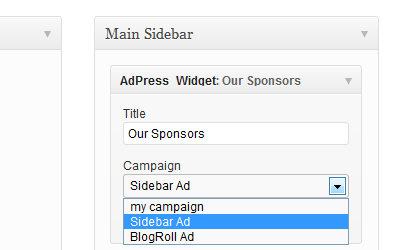If you play to insert the Ad inside a blog post or page text, shortcodes are the way to go. It's very rare, though. You'll need to enter the code for every blog post you publish. It's also quite simple, use the following code to insert your shortcode.
[adpress campaign=5]
Each campaign has a unique ID. In the AdPress campaigns page you can find the associated ID for each campaign.
Template integration is probably the best (since you can specify the exact place of the Ads), but requires HTML/CSS and also some PHP knowledge.
<?php
if (function_exists(display_campaign)) {
display_campaign(1);
}
?&g t;
Customizing Ad appearance is possible with AdPress. For both Image and Link Ads, AdPress generate an HTML list (UL) where Ads are HTML items (LI). This is a sample of the default generated code for an Image Ad Campaign
<ul class="image-campaign">
<li>
<a href="http://adurl.com" target="_blank">
<img src="http://siteurl.com/img1.png"/>
</a>
</li>
<li>
<a href="http://anotherad.com" target="_blank">
<img src="http://siteurl.com/img2.png"/>
</a>
</li>
</ul>
With AdPress, it's possible to change the generated code for the HTML items. This generated code can be found used Settings->Image Ad for image Ads and Settings->Link Ad for link Ads.
The HTML for Image and link Ad can be found in the Settings->Image Ad (tab) page, and Settings->Link Ad (tab) page. The following is the default code for both of them. The HTML code is mixed with AdPress variables. These variables will be replaced when AdPress generates the Ads Code.
Default code for the Image Ad
<li> <a href="@url" target="_blank"> <img src="@image_src"/> </a> </li>
- url The target Ad URL
- image_src The Ad image src URL
Default code for the Flash Ad
<li>
<div style="height: @banner_height; width: @banner_width; position: relative;">
<a target="_blank" style="height: @banner_height; width: @banner_width;" href="@url"></a>
<embed style="position: absolute;" type="application/x-shockwave-flash" src="@swf_src" quality="high"
wmode="transparent" height="@banner_height" width="@banner_width">
</div>
</li>
- url The target Ad URL
- swf_src The Flash banner src
- banner_height The banner height (px)
- banner_width The banner width (px)
Default code for the Link Ad
<li> <a href="@url" target="_blank">@link_text</a> </li>
- url The target Ad URL
- link_text The text of the link Ad
Beyond changing the HTML code, you can also edit and add styling to the generated HTML code. AdPress comes with a default, simple and minimalistic CSS styling
CSS Code for the Image Ad
.image-campaign
{
list-style: none;
}
.image-campaign li
{
display: list-item;
float: left;
padding: 0;
margin: 5px;
}
CSS Code for the Flash Ad
.flash-campaign
{
list-style: none;
}
.flash-campaign li
{
display: list-item;
float: left;
padding: 0;
margin: 5px;
}
.flash-campaign li div
{
position: relative;
}
.flash-campaign li div a
{
position: absolute;
z-index: 9999;
display: block;
}
CSS Code for the Link Ad
.link-campaign
{
}
.link-campaign li
{
color: #777;
font-size: 15px;
}
It's possible to add JavaScript effects to the generated Ads code. AdPress has no special support for this, so you need to add the code yourself. AdPress Ads lists has a class. (image-campaign for Image Ads, and link-campaign for Link Ads).
;
(function($) {
$(document).ready(function() {
$('.image-campaign li').hover(function() {
$(this).animate({
'opacity':1
});
}, function() {
$(this).animate({
'opacity':0.5
});
});
});
})(jQuery);
It's cool to have all your Ad Spots all the time, however, in the real world this happens very little. This is why we have made a CTA Ad feature. CTA for Call To Action. This new feature implemented in version 2.0 will help sell your vacant spots.
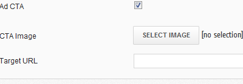How it works?
When there is an available spot in your campaign, AdPress will display your CTA Ad. This is typically, an empty image with a text of "Advertise here" for Image Ads, or an "Advertise Here" link for Link Ads. The target URL of this Ad is a link your specify. It should be a landing page that explains to the user and gives him more information about advertising on your website.
The CTA Ad only appears when there is one or more few spots. Only one CTA Ad will be displayed.
Implementation
Click the Ad CTA Checkbox to enable this feature. If you are using an Image Ad, you'll need to upload an image, and enter the target URL. If you are using a Link Ad, you'll need to enter the Ad text and also the target URL.
After designing your Ads, it's time to start selling. AdPress offers a dashboard where buyers can see the available campaigns and order Ads. This dashboard is only accessible for registered users with the right permission.
Get your clients to register
Your clients must register so they can buy Ads. Make sure you enable registration in WordPress, so they can sign up. After signing up as a user, they get assigned a role. By default, this role is "Subscriber", but you can change that.
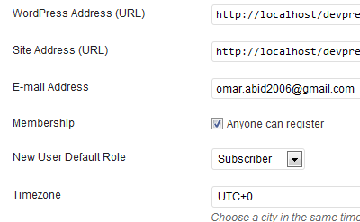In AdPress Settings Panel, set the users role to allow access the AdPress Client Dashboard. Set it to "All" if you want all users regardless of their roles to access the Client Dashboard. Set it to "Administrator" if you want to disable the Dashboard for all users.
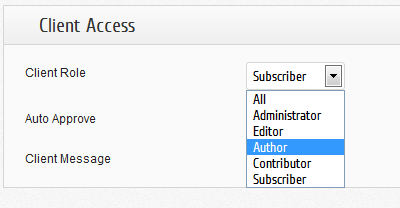Once clients have registered and logged in to their WordPress dashbaord, and you have granted them the right to access AdPress Client Dashboard, they can buy Ads.
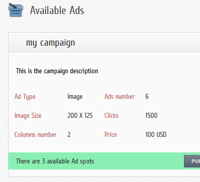Once registered and granted access, clients can see the running campaigns and available ads. They can also order Ads.
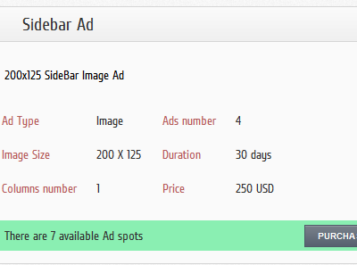To order an Ad, the client has to enter the required information. The client can also leave a message (if you allow it). This is optional. The message will be shown in the requests page.
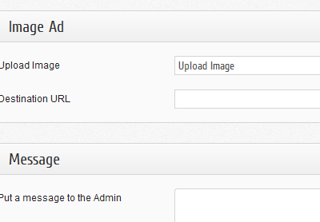Ads don't go live when clients order them. They are queued in the review queue. You can approve or reject them. The AdPress bar notifies you when there are new pending Ads. Once in the Ads requests page, click the more button to get more information about the Ad as well as the payment details (if PayPal is enabled).
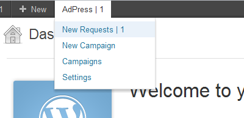Once Ads are approved, they are listed in the Running Ads List. It's worth mentioning that only clients that purchased the Ads can stop running Ads. You can only check the Stats for the Ad, and also how much credit (clicks, views or days) until the Ad expires.
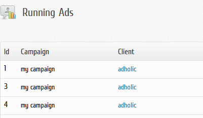Clicking the Stats button will take you to the stats page. You can visualize the Ad stats from this page in a graph and also in a table detailing all the click, views and CTR.
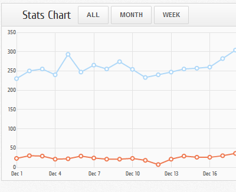P.S It's still possible to disable a client Ad, by gaining control of the client account (from your WordPress Admin panel) and disabling the Ad from his control panel
To automate payments, AdPress has PayPal support. AdPress uses the PayPal ExpressCheckout process. Read more about PayPal Expresscheckout.
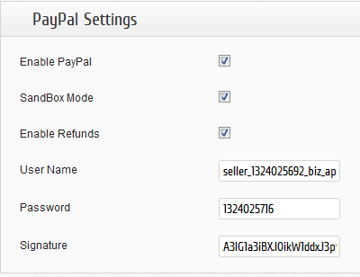SandBox Mode If you are new to PayPal Express Checkout, please sign up for their Sandbox test suite and get used to how PayPal works. PayPal has got a sandbox mode, which is a virtual platform similar to the one running PayPal. Its purpose is to make tests and see how it works before trying in real life. By checking this box, you enable the Sandbox mode.
Refunds AdPress supports refunds. When a purchaser make a purchase and it gets rejected (or cancels it before running), it makes sense to refund the payment. If refunds are enabled, rejecting the Ad will automatically issue the refund.
Every purchase is recorded by AdPress. The history is available from the Settings->history (tab). The history displays the time, date and details of the purchase. For the first version, it's not possible to see Ad Stats. This feature is planned in the future.
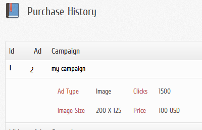AdPress has a powerful import and export feature. This feature will help you move your plug-in settings and data from a WordPress install to another with ease. The Import/Export panel is available in the Settings page of the plug-in, under the "Import/Export" tab.
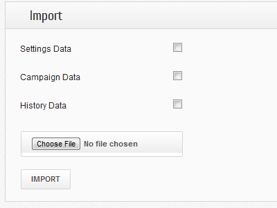AdPress has 3 types of data that you can export, import and reset: Plug-in Settings, Campaign Data, and History Data.
Plug-in Settings include the settings that can be set in the General, Image Ad and Link Ad panel. AdPress has a default configuration for these settings, but you can change them. (like adding PayPal ExpressCheckout details).
Campaign Data include all the campaigns and their Ads (running, waiting or available). There can't be a separation between campaigns and their Ads, they are linked together.
The History data can be found in the Settings panel, under the History tab. The history data is separate from the campaigns data.
First select one or more types of data (Plug-in Settings, Campaign Data or History Data) and then click the Export Button. The page will reload, and a new box will appear at the top with a download link. Click the link to download the back-up file. This file has the data that you asked for. The data is encoded so opening the file with a notepad will not help much understand its content. It can be read only with AdPress.
Make sure you store the file in a secure location.
Before importing any settings, you should have a back-up file. This back-up file must have the data you are looking to import. For example, if you want to import "History Data", the back-up file must have history data too.
Select the types of data to import, and then select the back-up file and click the import button.
Important notice
AdPress doesn't do a data merge. The import feature will completely replace your old settings. If you have campaign data, they'll be removed before the import process. This is rather a lack in our plug-in, and we are working on a merge feature in the future.
The plug-in reset will return the plug-in to a fresh install state. You can specify which types of data to reset, though.
The plug-in comes with limited support. We try to support all cases, but we can only garantuee the following
- Response Delay Expect to get a response in 24/48 hours in week-days. We don't work on week-ends, though.
- Running the plug-in Support only include the correct functionning of the plug-in. We expect that you can install and configure the plug-in yourself through the instruction we provide.
- Bugs We resolve bugs weekly. Critical bugs will be fixed in a shorter time.
- Customization While we welcome feature requests and ideas, we don't garantuee them being implemented. We are generally available for customizing the product. Our hourly rate is 80USD. The minimum billing is 240USD. Send us an email at dev@codeinput.com.
How to get support
We offer support with two mediums
- Support Forum We have a special forum for members who purchased a license of AdPress. We try to answer all questions (related to the product), but we prioritize and garantuee the support points mentioned above.
- Email Email support is usually for cases where we need to mediate in the client site, so there are sensitive information to exchange (like passwords, FTP information...)